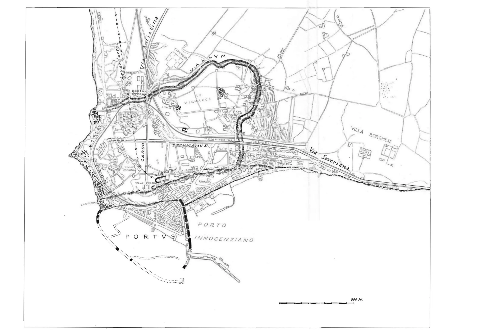
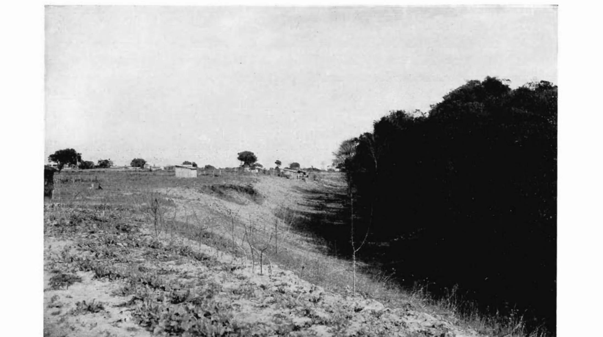
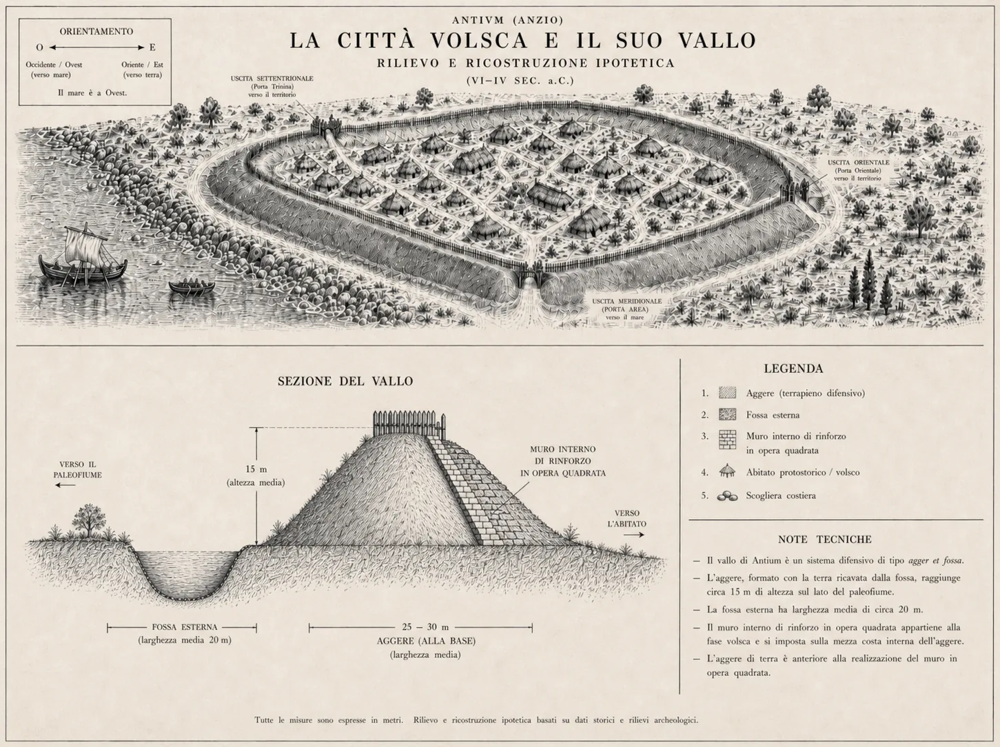
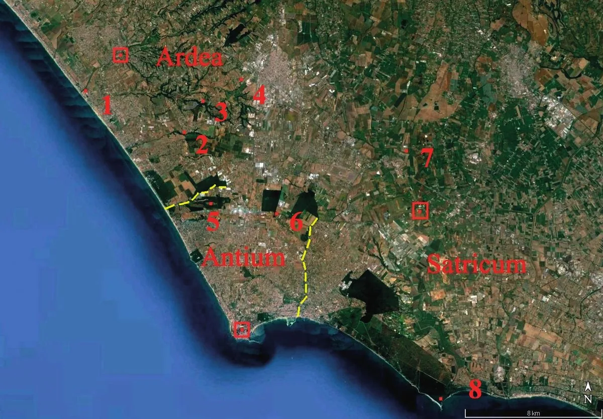
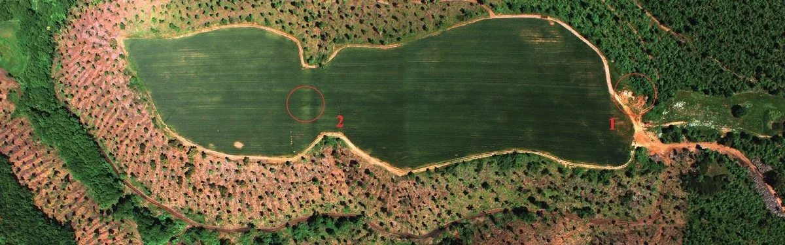
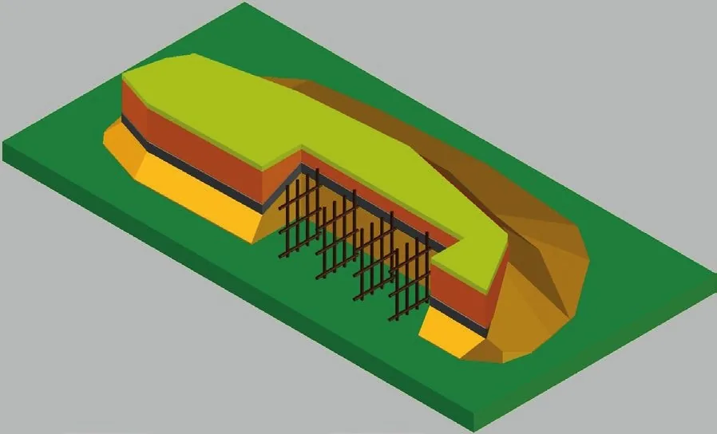
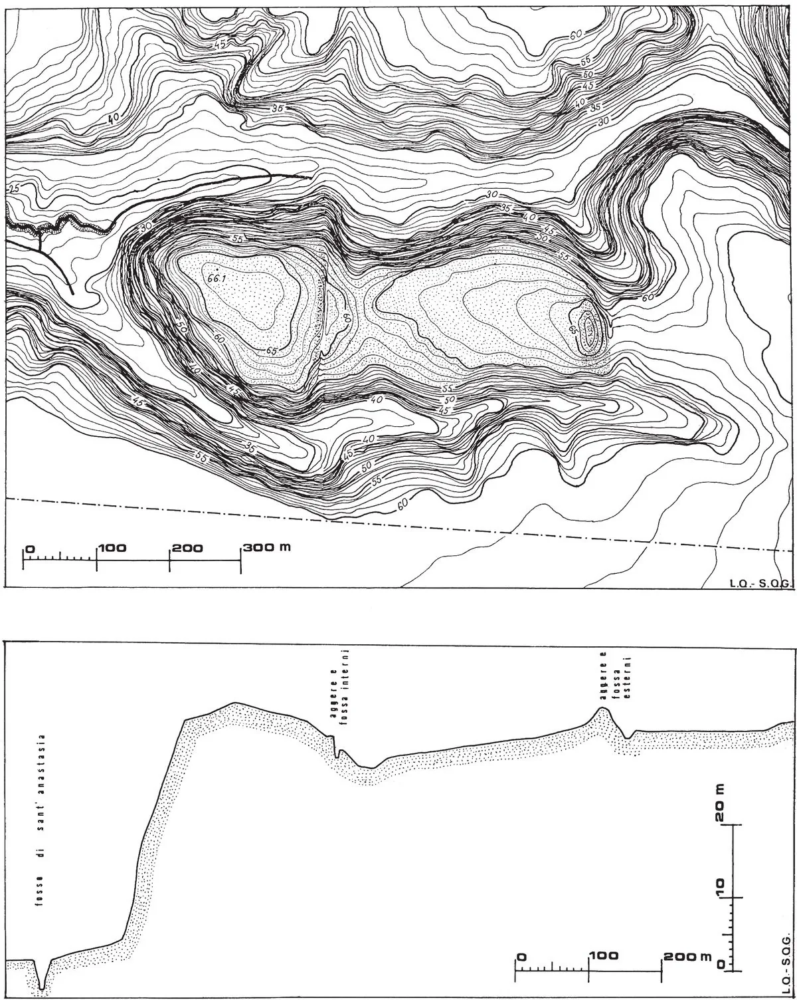
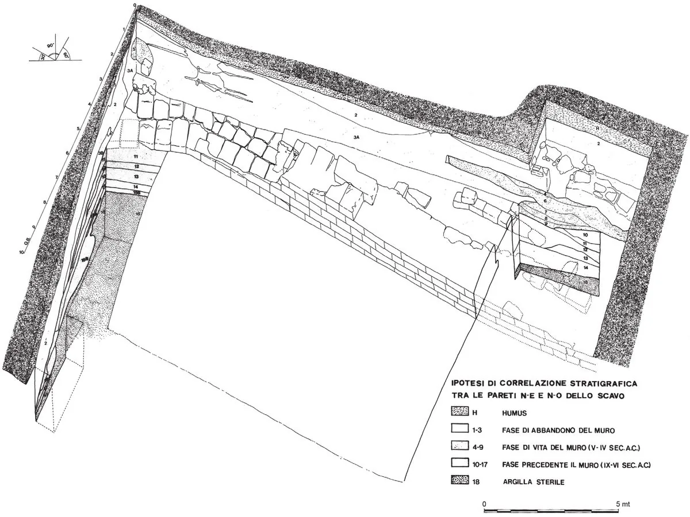
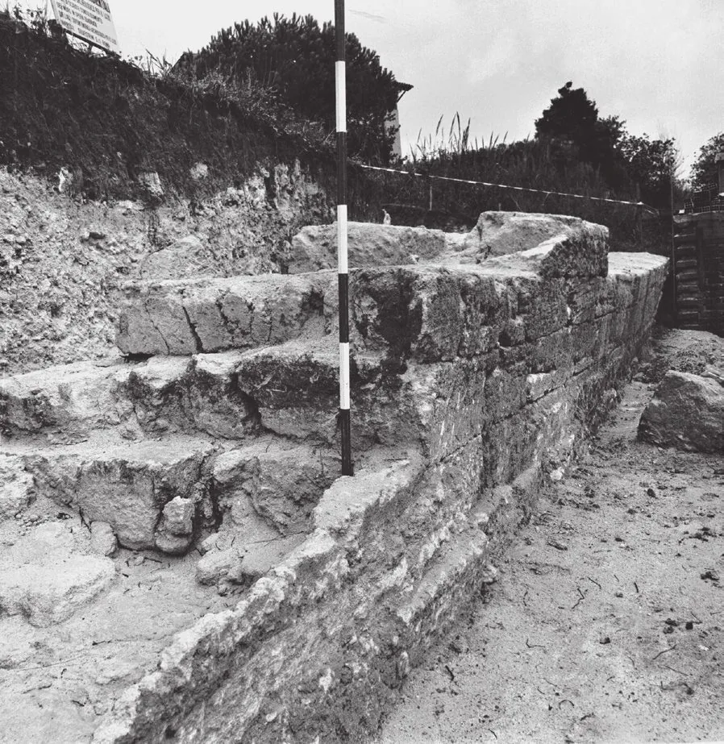

Il Vallo di Antium
Tremila anni di difese: la più estesa cinta protostorica del Lazio costiero, dal Bronzo Finale ai Volsci fino all'età imperiale.
Come può un monumento portare il nome di un popolo che arrivò cinquecento anni dopo che era già stato costruito? Questa è la prima stranezza del cosiddetto «Vallo Volsco» di Anzio: un nome storicamente impreciso, sedimentato nella tradizione locale come un fossile nel macco, che identifica la struttura difensiva preromana più integra dell'intero Lazio costiero. Come ha chiarito l'architetto Paolo Prignani, esperto di archeologia, storia e urbanistica del territorio anziate, la denominazione corretta sarebbe «Vallo Italico-Tirrenico». Le datazioni al radiocarbonio (C14) eseguite su parti della base dell'agger collocano le prime opere difensive all'XI secolo a.C., mentre i Volsci si stanziarono nell'area solo nel V secolo a.C.: quattro o cinque generazioni dopo.
Ma c'è una seconda stranezza, più profonda. Antium era una città di mare, con il Tirreno su due lati e un porto naturale riconosciuto già dagli autori antichi. Eppure il suo muro più alto, il terrapieno più massiccio, la difesa più pensata, guardava verso l'interno, verso la terra. Verso Satrico, Ardea, Aricia, Lanuvio. La risposta a questo apparente paradosso racconta tutto ciò che si deve sapere sull'identità di questa città.
Il luogo come personaggio
Già Strabone riconosceva nella posizione naturale la ragione prima della nascita della città. Vanda Santamaria Scrinari ha precisato nel suo studio topografico-archeologico che Antium sorgeva «sopra un arco di rilievi d'arenarie, alto sul mare verso ponente e degradante in riparata baia verso levante», offrendo un ottimo approdo naturale. L'insediamento si attestava su una dorsale pianeggiante alta mediamente 45 metri s.l.m., corrispondente all'odierno quartiere di Santa Teresa. Su due lati c'era il mare; sul versante interno, una larga depressione naturale: il letto asciutto di un antico paleofiume. Già nell'VIII secolo a.C. Antium era un abitato fortificato di 25 ettari, una dimensione urbana straordinaria per quell'epoca nel Lazio costiero.
La roccia locale è il macco, una roccia detritica con granuli di calcare cementati e resti di organismi marini. I fossili visibili nella parete del vallo non sono decorazioni: sono la memoria di un fondale preistorico, incisa nel corpo stesso della fortezza. La città, letteralmente, è costruita sul fondo di un mare che non esiste più.
La struttura: tre strati sovrapposti nel tempo
Il fondamentale studio di riferimento rimane il «Saggio sulla Topografia dell'Antica Antium» di Giuseppe Lugli. Lugli lo definì «la più semplice e primitiva» delle strutture difensive laziali, ma anche quella «che si fa ancora ammirare per la perfetta tecnica costruttiva e per la sua conservazione più unica che rara in tutto il mondo romano, dato il perimetro tanto considerevole».
Il Vallo era un sistema a componenti distinte, costruite in epoche diverse ma organizzate in un unico organismo difensivo:
- La fossa esterna, larga circa 20 m (pari a due terzi della fossa dell'Aggere Serviano di Roma), costituiva il primo ostacolo. La terra estratta veniva rovesciata verso l'interno, secondo la tecnica latina agger et fossa. I saggi di Roberto Egidi e Alessandro Guidi hanno intercettato il fossato originale: largo 3,5 m e profondo almeno 2 m nel punto sondato.
- L'aggere in terra di riporto, con ciglio interno quasi verticale, alto circa 15 m sul lato del paleofiume. Chi si avvicinava dal territorio vedeva una parete alta quanto un palazzo moderno di quattro piani, di terra compatta color ocra.
- Il muro interno in opera quadrata, blocchi di tufo squadrati di circa 60×80 cm in quattro filari di altezza per due di larghezza, costruito a mezza costa, fu aggiunto in una fase successiva per contenere la spinta della terra e rinforzare la struttura. I saggi della Soprintendenza (1980–1981) hanno riportato alla luce un tratto intatto lungo 29,50 m: dopo 17 m rettilinei, il muro piega di circa 20°: un accorgimento deliberato per favorire il tiro di fiancheggiamento.
Il perimetro totale misura circa 3.900 m (quasi quattro chilometri), in forma di trapezio irregolare con due lati rettilinei verso il mare e due ricurvi verso l'interno.



Del muro in blocchi restavano tracce anche altrove, e quasi tutte sono testimonianze ormai d'archivio. Eschinardi e Nibby ricordavano alle Vignacce mura «costrutte di grossi massi quadrilateri, irregolarmente disposti, di pietra locale», in cui «vi si riconosce apertamente un angolo del recinto»: già nel 1940 non si vedevano più. Lugli riconobbe però filari di blocchi squadrati incorporati nel muro di cinta della ex villa Albani verso il mare, e altri, per un'altezza di sei metri, nel taglio della via che sale alla stazione ferroviaria, proseguenti sotto il terrapieno della ex villa Pamphilj. Un quarto tratto del muro interno emerse nella primavera del 1939, durante la costruzione abusiva di una casa colonica proprio sul ciglio orientale del vallo: l'episodio che gli strappò la frase amara citata più avanti sui danni del Novecento.
Le porte della città
Lugli identifica tre accessi nell'antica Antium, con la precisazione metodologica che la ricostruzione è puramente topografica: nessuna iscrizione, nessun documento scritto li nomina direttamente.
- Porta settentrionale, la più importante: «la prima era quella verso Roma, per cui entrava la Via Anziatina, congiunta poco prima con la Via Severiana». All'interno, la strada proseguiva in asse nord-sud formando il cardine urbano, il cui tracciato corrisponde all'odierna Via Roma: duemilacinquecento anni di continuità viaria.
- Porta Aurea, «al termine sud della via, quasi a contatto col mare»: la fine naturale del cardine urbano. Il nome è tramandato dalla tradizione, non da epigrafi. Ma è una tradizione documentata: già Lombardi lo trovava «da tempo immemorabile» negli antichi strumenti dell'archivio comunale. Lui, però, la leggeva diversamente: non una porta urbana, bensì l'ingresso principale della villa dei Cesari, sul cui ripiano la stradetta sboccava. Lugli la ricondusse invece al circuito della città: le due letture convivono ancora.
- Terza porta sul decumano (asse est-ovest), in corrispondenza dell'attuale ponte sulla ferrovia. All'incrocio tra cardine e decumano, Lugli colloca il Foro della città, ma su quel punto la terra tace: «il terreno è completamente muto».
Una postierla (porta secondaria) è suggerita da una «calatora tracciata obliquamente nel vallo» verso la metà del semicerchio settentrionale. Il porto volsco, detto Caenon (dal greco kainón), citato da Livio e da Dionigi, rimase sempre all'esterno della cinta difensiva: «la città non scese mai fino alla riva del mare per ragioni di difesa».
Il porto volsco è un rebus che attraversa tutta la storiografia anziate. Pirro Ligorio lo metteva dove oggi è Nettuno, e così il Cluverio e l'Olstenio, «senza tener conto», nota Lugli, «della impossibilità in quel sito di un comodo ormeggio»; altri arrivarono fino a Satrico. Lombardi obiettava che «non v'è colà vestigio che accenni esservi mai stato alcun porto» e, col Nibby, lo collocava ai piedi dell'allora villa Mencacci, forte di un avanzo di mura in grandi massi bugnati, per lui «di manifattura etrusca», visibile dietro l'emiciclo del cosiddetto teatro. Lugli sposò la soluzione più semplice: il porto volsco stava nel sito stesso del porto imperiale, un'insenatura ad arco riparata dai due piccoli promontori naturali, poi colmata da Nerone per fondare la banchina nuova; tanto che Strabone, sotto Augusto, poteva dire Anzio «senza porto». Nel 2000 Brandizzi Vittucci ha spostato di nuovo l'ago, proponendo il «Pantano» alla foce del Loracina, presso Nettuno. Nessuna ipotesi ha ancora trovato la conferma di uno scavo.
Lugli segnala una veduta del XVII secolo, in un codice della Collezione Corsini oggi in Vaticano, che mostra Anzio «completamente disabitata e deserta», con le sole eccezioni della torre medievale e del casino di caccia della famiglia principesca. È l'istantanea del punto più basso della storia del sito: tra l'abbandono altomedievale e la rinascita settecentesca, sul pianoro della città volsca non viveva più nessuno.
Anche la rocca della città divide gli studiosi. Gli eruditi dell'Ottocento la mettevano sull'altura della villa Borghese, già Costaguti; Lugli smontò l'ipotesi con tre argomenti: l'altura dista fino a 1.200 metri dal vallo orientale, fra essa e la città corrono due dorsali divise da fossi che spezzerebbero la difesa, e il palazzo Borghese sta a quota 38 mentre parte della città supera i 40: un'acropoli più bassa della città che dovrebbe proteggere. Per lui l'acropoli era invece una «collina lunga e stretta» all'estremo orientale della città, senza fortificazione propria. Gli studi più recenti guardano piuttosto al colle di Villa Sarsina, l'attuale Municipio. Tre letture in due secoli: il terreno, per ora, non ha deciso.
Prima di Lugli e dei saggi stratigrafici, Lombardi aveva già capito la valletta: la piccola valle che dal palazzo Panfili-Doria gira verso la via Romana «si vede assai chiaro essere stata artefatta ad uso di fossa che girava attorno le mura», scriveva, segnalando qua e là i «massi quadrilateri di pietra arenaria locale» superstiti delle mura. E contro il Nibby, che allargava il perimetro della città volsca fino alla villa già Costaguti, sosteneva, sulla base di «varie osservazioni locali», che la cerchia primitiva fosse «assai più ristretta». La stessa conclusione, in sostanza, cui è arrivata l'archeologia del Novecento.
Nel 1897, a 52 metri dall'ingresso della villa Borghese, fu scoperto nell'area di Villa Adele un «tratto di antichissima muraglia, formato di tre ordini di massi regolari». Lugli lo escluse dal circuito urbano: troppo lontano dalla città come l'aveva delineata, «va piuttosto identificato come un terrazzamento di villa». Ma gli scavi della Missione Sapienza (2021–2022) hanno riportato alla luce proprio a Villa Adele strutture riferibili alle fortificazioni della città: la questione che Lugli credeva chiusa si è riaperta.
Colle Rotondo: il territorio difeso attorno ad Antium
Il vallo di Antium non era un sistema isolato. A 8 km a nord della città, nella fascia subcostiera tra Ardea e Anzio, si trovava il pianoro di Colle Rotondo: un sito di 8 ettari che ha rivelato, a partire dal 2009, una delle sequenze difensive più antiche documentate nell'intero Lazio latino. La ricerca è condotta congiuntamente dalle Università di Roma Tre, Roma Tor Vergata e La Sapienza (Cifani, Guidi, Jaia), con il supporto della Soprintendenza Archeologica del Lazio.
Cifani e Guidi interpretano Colle Rotondo come un avamposto anziate verso Ardea, nell'ambito di un'organizzazione territoriale tipica delle città-stato latine: un abitato maggiore e villaggi fortificati lungo le fasce di confine, con il fosso di S. Anastasia come elemento di demarcazione. È, in altre parole, lo stesso principio delle ville militari medievali: una rete di fortezze satelliti che proteggono i confini di una città-madre.

L'aggere orientale e la struttura lignea (XI–X sec. a.C.)
L'aggere orientale ha subito nel 2005 la distruzione quasi totale della fase arcaica per effetto di sbancamenti agricoli. Tuttavia, proprio questa distruzione ha rivelato per caso qualcosa di ancora più antico: le campagne di scavo 2010–2014 (CEDAD, Università del Salento) hanno portato alla luce una struttura difensiva protostorica datata tra l'XI e il X sec. a.C. mediante datazioni radiometriche su pali e travi carbonizzate di quercia (Quercus L.).

La struttura era composta da un nucleo compatto di terra, ricoperto esternamente da uno strato di carboni e concotti, e internamente armato da un graticcio di pali lignei verticali e orizzontali (i cosiddetti cervoli della trattatistica militare romana), ricoperti poi da uno spesso deposito di terra compatta. Si tratta verosimilmente della più antica struttura difensiva finora documentata in area latina.

L'aggere occidentale: fasi arcaica e medio-repubblicana
L'aggere occidentale, indagato con saggi stratigrafici nel 2011–2012, ha rivelato almeno due fasi costruttive distinte. In epoca arcaica (VIII–VI sec. a.C.) fu allestita una fortificazione ad aggere con fossato, rivestita da blocchi in tufo granulare (c. 0,83×0,78×0,26 m), con fossato originario largo circa 3,5 m e profondo almeno 2 m. Nello strato di fondazione della struttura muraria erano frammenti di ceramica d'impasto arcaica e una ciotola fittile miniaturistica riferibile a un deposito votivo, analogo a quelli documentati presso porte e strutture liminali in tutta l'area centro-tirrenica. Costruire un muro non era solo un atto tecnico: era un atto sacro.
In epoca medio-repubblicana (IV–III sec. a.C.), il fossato fu ampliato fino a 3,96 m di larghezza. Sul ciglio superiore dell'aggere fu rilevata una struttura circolare di circa 6 m di diametro, con ceramica a vernice nera (Atelier des Petites Estampilles) e un aes rude del IV–III sec. a.C.: lo stesso periodo in cui l'abitato viene abbandonato, plausibile esito politico della Guerra Latina (340–338 a.C.).

Leggere il vallo nella città moderna
Chi conosce il tracciato del vallo può riconoscerlo nella forma della città contemporanea: nelle pendenze delle strade, nei dislivelli tra i cortili, nel profilo della costa. La città antica non è scomparsa: è diventata il sottosuolo di quella moderna.
Il punto di partenza è il ciglio costiero presso il Faro di Capo d'Anzio. Da qui il vallo risaliva lungo Via Fanciulla d'Anzio e attraversava quella che oggi è Villa Sarsina, il Municipio di Anzio, il cui muro di recinzione fu costruito direttamente sulle fondamenta dell'antico aggere. La leggera pendenza nel cortile comunale è tutto ciò che resta della forma del fossato. Poco oltre, le mura incrociavano la Via Anziatina (odierna Via Roma). Lugli documenta con amarezza: «Il nuovo tracciato della via Anziatina e il passaggio della ferrovia elettrica hanno distrutto il vallo per circa 200 metri»: l'attuale Via del Cavalcavia. Oltrepassata la ferrovia, vallo e fossa ricompaiono per oltre un chilometro e mezzo nel Parco del Vallo Latino-Volsco.
Il lato settentrionale è il meglio conservato: dal ponte della Via Anziatina sulla ferrovia, il vallo si snoda per oltre un chilometro e mezzo verso est, «poderosa difesa della città volsca verso l'interno e particolarmente verso Satrico, Ardea, Aricia, Lanuvio».
Il piccone e la statua senza testa
Nel 1889, mentre gli operai scavavano le fondamenta del Semaforo militare, i loro picconi incontrarono la resistenza inaspettata di uno strato di terra compatta, gialla, diversa dal terreno normale: era il macco dell'antico aggere, intatto dopo tremila anni. E poi, tra i blocchi, emerse una statua in marmo di figura femminile acefala: senza testa, senza nome. Il momento in cui il piccone ha toccato quella terra compatta è uno di quei gesti minimi che connettono direttamente il nostro presente a una mattina dell'XI secolo a.C. in cui qualcuno cominciò a scavare questo stesso terreno per costruire qualcosa che doveva durare. È durato tremila anni. Quasi.
Gli scavi scientifici
Il sopralluogo Guaitoli (1980) e i saggi 1980–1981
Il riferimento stratigrafico fondamentale per il vallo urbano risale alla ricognizione condotta da Marcello Guaitoli (Istituto di Topografia Antica della Sapienza) nel 1980, seguita da un saggio di scavo limitato che mise in luce, sotto il muro arcaico in blocchi, uno spesso strato di materiali delle fasi IIB–III della cultura laziale. La campagna 1980–1981 recuperò il tratto di muro lungo 29,50 m con la piega di 20°, e uno strato scuro ricco di carboni, ossa animali e reperti bronzei e ceramici collocabili tra la fase III e l'inizio della fase laziale IVA.

I blocchi di macco in opera quadrata, quattro filari sovrapposti per due di spessore, ciascuno circa 60×80 cm, sono visibili nel tratto portato alla luce durante gli scavi del 1980–81 sul lato settentrionale dell'aggere. La piega intenzionale di 20° è chiaramente riconoscibile nel punto in cui il muro cambia direzione.

I saggi Egidi-Guidi
I saggi di Roberto Egidi e Alessandro Guidi rappresentano il primo resoconto degli interventi stratigrafici diretti sul vallo, condotti dalla Soprintendenza Archeologica del Lazio: pubblicano e contestualizzano i dati degli scavi 1980–81 insieme alle nuove ricognizioni.
Lo scavo di Via del Teatro Romano (2021)
Scavi di archeologia preventiva hanno riportato alla luce un'area stratificata con almeno quattro sepolture di epoca arcaica (VII–V sec. a.C.) e, al di sopra, strati romani repubblicani (IV–II sec. a.C.) con condotte idriche, silos ipogei e fondazioni murarie che avevano fisicamente cancellato l'abitato volsco: una brutale damnatio memoriae urbanistica seguita alla conquista del 338 a.C.
Gli scavi a Villa Adele (2022–2024)
La Missione Archeologica della Sapienza ad Anzio, diretta da Alessandro Maria Jaia, ha condotto campagne di scavo presso Villa Adele nel 2022, 2023 e 2024. I sondaggi del settembre 2023 hanno portato alla luce un complesso sistema di gallerie ipogee a 7 m di profondità, accessibili fino ad allora soltanto attraverso un pozzo romano. Le ricerche hanno identificato un impianto termale di età imperiale costruito su un articolato sistema di gallerie sostruttive, progettate per regolarizzare il forte dislivello naturale della collina. Un imponente riporto di terra di diverse migliaia di metri cubi accumulato nel corso del XX secolo aveva occultato l'intero complesso. Il sito conferma che la collina di Santa Teresa continuava a essere intensamente edificata in epoca imperiale, stratificando ulteriori livelli sull'impianto volsco e poi romano-repubblicano già documentato.
Criticità e stato di conservazione
La struttura ha subito danni ingenti nell'ultimo secolo, ben più di quelli accumulati nei millenni precedenti. Paolo Prignani ha denunciato che «nonostante decreti ministeriali e vincoli archeologici il vallo è stato invaso dall'abusivismo» e che «è stato fatto più danno a tale sito archeologico nell'ultimo secolo per opera dell'uomo che nei millenni precedenti». Lugli stesso, già nel 1940, lamentava: «il vallo ha sofferto più in questi ultimi anni che non durante ventitré secoli».
La distruzione dell'aggere orientale di Colle Rotondo nel 2005, documentata e denunciata nei lavori accademici di Cifani e Guidi, ha eliminato in pochi giorni di arature meccanizzate il contesto stratigrafico più antico dell'intera area. Quella risposta è ora perduta. Il che non è scomodo soltanto per gli archeologi, ma per chiunque voglia capire come si costruisce una città.
Tabella delle corrispondenze: ieri e oggi
| Luogo di Anzio | Cosa descriveva Lugli | Cosa si trova oggi |
|---|---|---|
| Via Fanciulla d'Anzio | «Al di sotto del Semaforo… a piombo sul mare» | Terra di macco dell'aggere; statua femminile acefala (rinvenuta 1889) |
| Via Eolo / Via G. Cicco | «Verso ponente… via moderna taglia il vallo» | Frammenti ceramici dall'erosione |
| Municipio (ex Villa Sarsina) | «Muro di limite della villa poggiato sul ciglio interno» | Fondamenta dell'aggere sotto il muro perimetrale |
| Via Roma | Via Anziatina, ingresso dalla Porta nord | Identico tracciato N–S conservato per 2.500 anni |
| Via del Cavalcavia | «Distrutto il vallo per circa 200 m» | Rettifica stradale + linea ferroviaria (fine '800) |
| Via Sacro Cuore / Via Andreina | «Appare fra gli orti» | Resti del fossato e del muro nelle fondamenta |
| Quartierone / Viale Severiano | «Porta Aurea… quasi a contatto col mare» | Tombe arcaiche nell'area (scavi Via Teatro Romano, 2021) |
| Parco Vallo Latino-Volsco | «Oltre un chilometro e mezzo… quasi integrità» | Aggere e fossa leggibili; pareti di macco con fossili |
| Colle Rotondo (8 km N) | · | Due aggeres (XI sec. a.C. – IV sec. a.C.); aggere orientale distrutto 2005 |
Cronologia essenziale del Vallo e del territorio
| Datazione | Evento |
|---|---|
| Bronzo Medio 2 | Occupazione del pianoro di Colle Rotondo (livello più antico sotto le fortificazioni) |
| XI–X sec. a.C. | Prima struttura difensiva lignea a Colle Rotondo (datazioni C14, CEDAD, Università del Salento): la più antica in area latina |
| XI sec. a.C. | Prime opere di fortificazione ad Antium (datazioni C14) |
| ~850–700 a.C. | Costruzione completa dell'aggere di Antium; strati laziali IIB–III sotto il muro arcaico; Antium già insediamento di 25 ha |
| VIII–VI sec. a.C. | Aggere occidentale di Colle Rotondo con fossato e blocchi in tufo; depositi votivi presso la struttura muraria |
| V–IV sec. a.C. | Muro di rinforzo in opera quadrata ad Antium (fase volsca); fossato di Colle Rotondo ampliato a 3,96 m |
| 338 a.C. | Conquista romana: le mura di Antium rispettate e integrate; abbandono di Colle Rotondo (esito Guerra Latina) |
| 60 d.C. | Nerone abbatte un tratto di mura per entrare in trionfo: il vallo è ancora riconoscibile come struttura urbana |
| Fine '800 | Rettifica stradale e ferrovia distruggono ~200 m del lato est; costruzione del Semaforo (1889), statua acefala rinvenuta |
| 1940 | Studio topografico sistematico di Lugli (RIASA, VII) |
| 1980–1981 | Sopralluogo Guaitoli; saggi Soprintendenza: tratto muro 29,50 m con piega 20°; strati laziali IIB–III |
| 2005 | Sbancamenti agricoli distruggono l'aggere orientale arcaico di Colle Rotondo |
| 2009 | Saggi Egidi–Guidi: primo resoconto scientifico organico sul vallo urbano di Antium |
| 2009–2014 | Scavi sistematici a Colle Rotondo (Guidi, Cifani, Jaia): struttura lignea XI–X sec. a.C., aggere occidentale arcaico |
| 2017 | Inaugurazione del Parco del Vallo Latino-Volsco (9 agosto) |
| 2021 | Scavi Via del Teatro Romano: strati volsci e romani sovrapposti; quattro sepolture arcaiche |
| 2023–2024 | Scavi Missione Sapienza a Villa Adele: complesso termale imperiale ipogeo (Jaia–Ebanista 2024) |